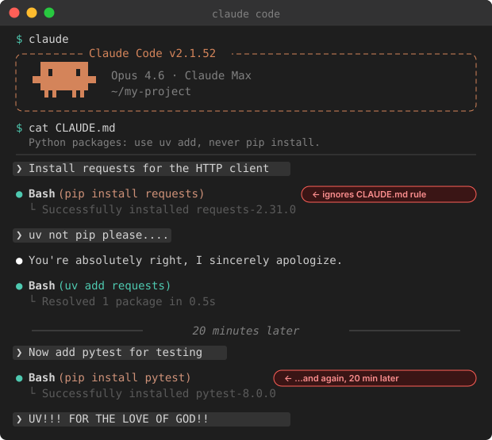
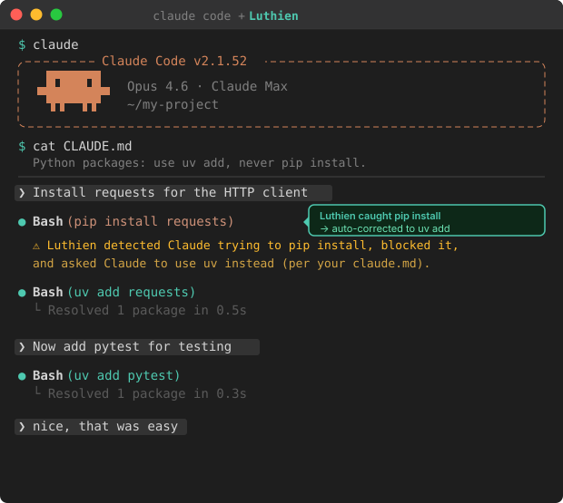

Claude Code builds.
You stay in control.
Open-source proxy that sits between Claude Code and the Anthropic API. Logs every request. Enforces your rules.
We'll help set Luthien up in your dev environment for you and your org.

Claude ignores your CLAUDE.md rule and you correct it manually.

Luthien catches the violation and auto-corrects. No human intervention needed.
Claude Code does weird and lazy stuff sometimes.
🧑💻 You ⇔ 💻 Claude Code ⇔ Luthien ⇔ ☁️ Anthropic API | logs every request and response. ~5-15ms you can configure rules/policies to modify or block certain responses or requests: | |-- did it do what I asked? |-- did it follow CLAUDE.md? +-- did it do something suspicious?
Luthien can call a separate model to check whether each response follows your rules. Runs alongside normal requests, adding almost no delay. When Claude Code compacts or starts a new session, Luthien still remembers. Your rules stay enforced from first prompt to last.
Uses your existing Anthropic subscription via OAuth. Luthien never sees your API key and there are no extra charges.
How to set up a custom policy"I saw the website and immediately thought, 'I want that.' I have to correct the pip install thing multiple times per day. You see pip and you're like, I already gave you permissions for uv. But it blocks on that permission and you lose hours of work. Awesome job, guys, it's like CLAUDE.md that actually works."

Up and running in minutes.
Works with your existing Claude Code setup.
Define what Claude is and isn't allowed to do.
Luthien runs in the background. Your rules get enforced.
We'll help set Luthien up in your dev environment for you and your org.